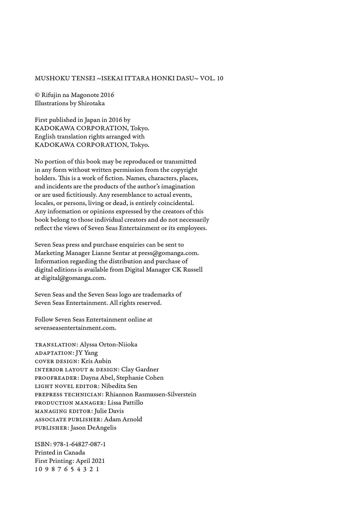

Mushoku Tensei: Jobless Reincarnation Vol. 10
Rifujin na Magonote
previous page
next page

Table of contents
Table of Contents
Color Inserts
Title Page
Copyrights and Credits
Table of Contents Page
Chapter 1: Backing
Chapter 2: Things to Prepare Before Marriage (Part 1)
Chapter 3: Things to Prepare Before Marriage (Part 2)
Chapter 4: Dramatic
Chapter 5: Wedding Reception Preparations
Chapter 6: Hosting the Wedding Reception
Chapter 7: End of the Wedding Reception
Chapter 8: Life With a House
Chapter 9: The Letter
Chapter 10: Breakdown
Chapter 11: Three Heads Are Better Than One
Chapter 12: Nostalgia and Frustration
Side Story: The Sharpening of Fangs
Extra Chapter: The Master Babysitter
About the Author: Rifujin na Magonote
Newsletter
previous page
start
next page